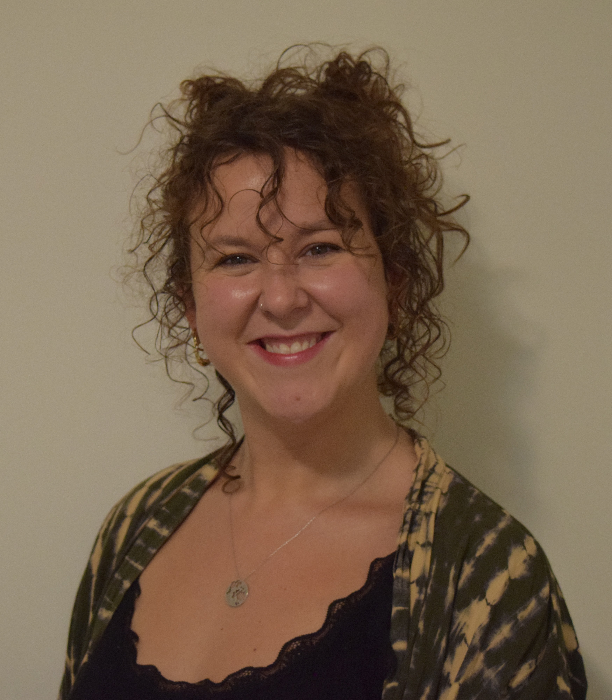
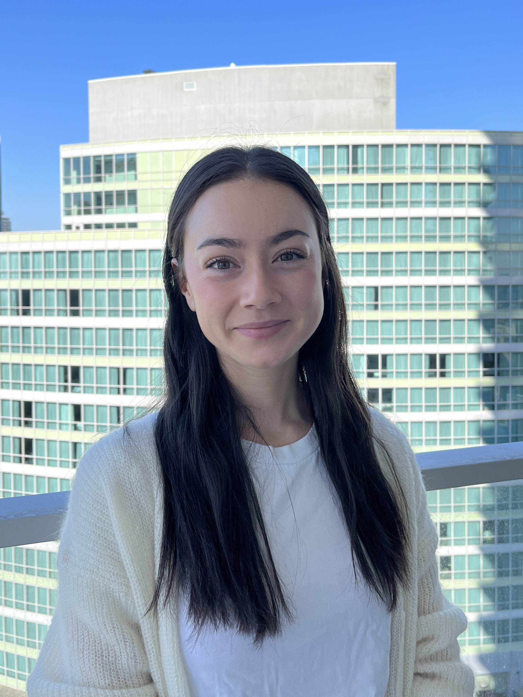
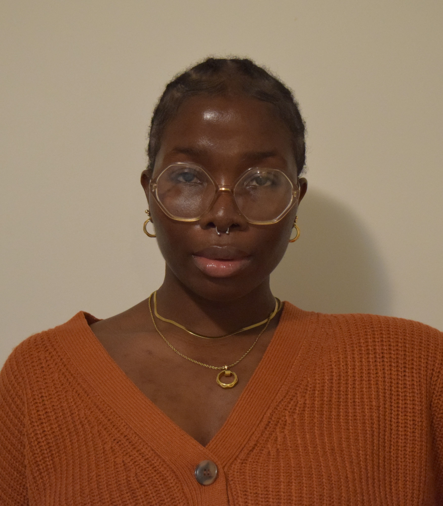
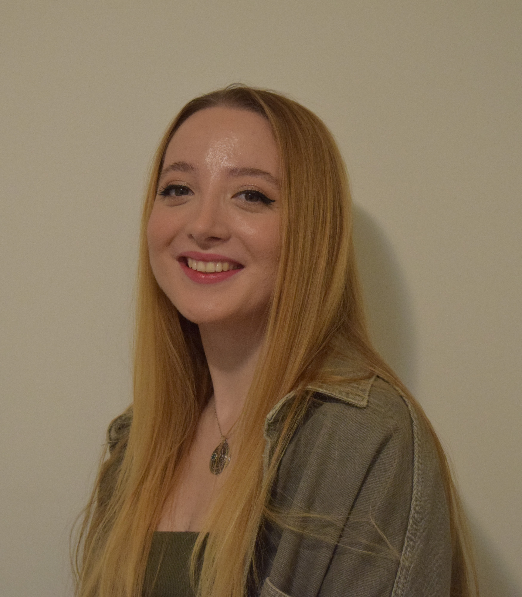
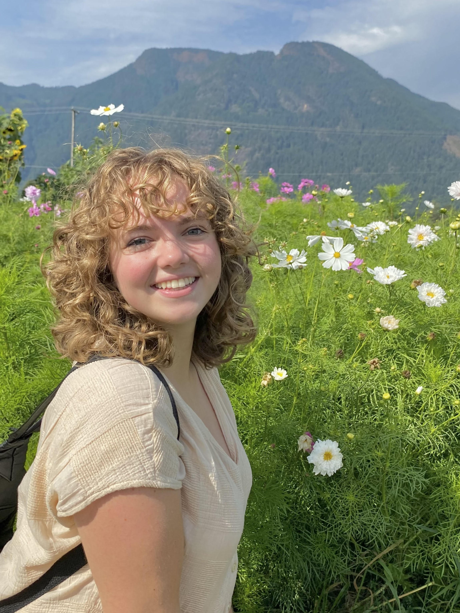
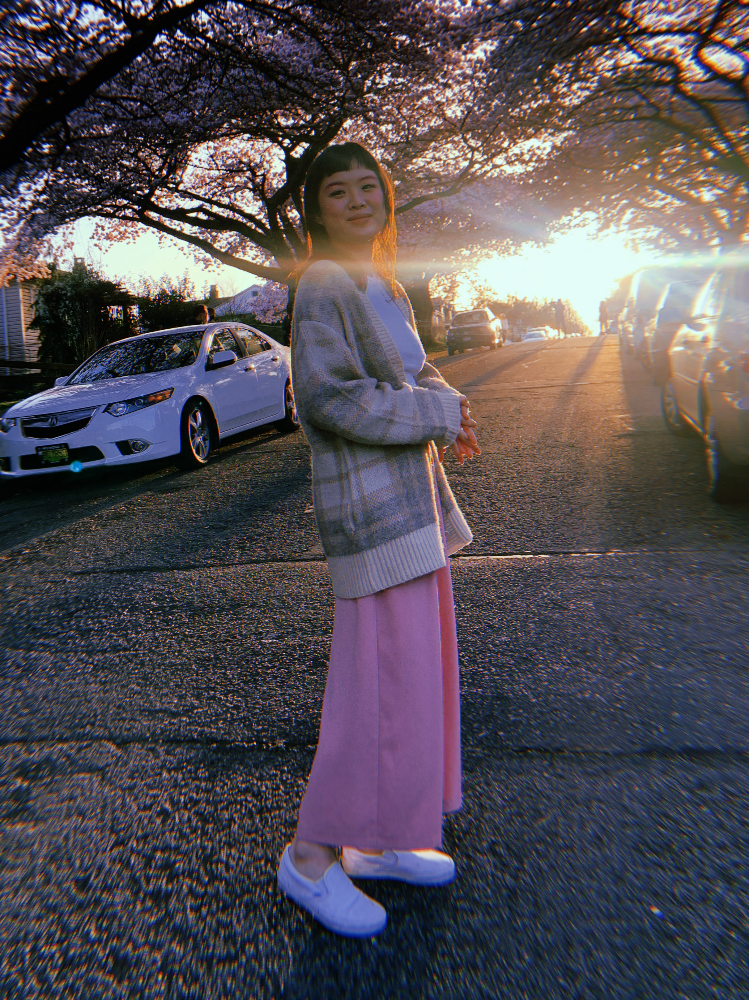

INTERNATIONAL WOMEN'S DAY MARCH
VANCOUVER
TEAM PAST EVENTS RESOURCES NEWS CONTACT US
Vancouver Committee
Yasmin (she/her)
Chair
Yasmin is an author, actor and activist. Her full time job is currently working with the North Shore Women's Centre to provide gender based violence reduction program to high schools around BC. Her creative endeavours, be it writing children's books or theatre, are all focused around representation of marginalized groups & underrepresented family structures without that factor being the centre of the story. She holds an MA in Gender, Sexuality & Women's Studies from SFU.
What does being part of the IWD team mean to Yasmin?
I am so honoured to be chairing this committee again and to do my utmost to honour the intersections of women we represent in Vancouver. I want to make sure we celebrate women's achievements, represent women from all walks of life and continue to fight the abundance of struggles women face worldwide - all whilst recognizing self-identifying women's diversity.
Chair
Yasmin is an author, actor and activist. Her full time job is currently working with the North Shore Women's Centre to provide gender based violence reduction program to high schools around BC. Her creative endeavours, be it writing children's books or theatre, are all focused around representation of marginalized groups & underrepresented family structures without that factor being the centre of the story. She holds an MA in Gender, Sexuality & Women's Studies from SFU.
What does being part of the IWD team mean to Yasmin?
I am so honoured to be chairing this committee again and to do my utmost to honour the intersections of women we represent in Vancouver. I want to make sure we celebrate women's achievements, represent women from all walks of life and continue to fight the abundance of struggles women face worldwide - all whilst recognizing self-identifying women's diversity.
Megan (she/her)
Vice-Chair
Megan completed her MA in Gender, Sexuality & Women's Studies from SFU in 2022. Since graduating, Megan worked on the project team tasked with reimagining the Gender Clinic at BC Children's Hospital, and currently works with the Harm Reduction team at the BC Centre for Disease Control.
What does being part of the IWD team mean to Megan?
I'm so grateful to return to this committee and build on the amazing work we did last year. To me, IWD is about amplifying voices and opening our hearts to the experiences of others. It's also about taking steps forward and calling on our allies and those in power to commit to real change. I'm so excited for the march and can't wait to see you all there!
Vice-Chair
Megan completed her MA in Gender, Sexuality & Women's Studies from SFU in 2022. Since graduating, Megan worked on the project team tasked with reimagining the Gender Clinic at BC Children's Hospital, and currently works with the Harm Reduction team at the BC Centre for Disease Control.
What does being part of the IWD team mean to Megan?
I'm so grateful to return to this committee and build on the amazing work we did last year. To me, IWD is about amplifying voices and opening our hearts to the experiences of others. It's also about taking steps forward and calling on our allies and those in power to commit to real change. I'm so excited for the march and can't wait to see you all there!
Oreofeoluwa (she/her)
Administrative Director
Oreofeoluwa has a bachelor's degree in International relations and diplomacy followed by a masters degree in gender, sexuality and women's studies. Oreofeoluwa currently works as the Lead Researcher and Project Coordinator - gender based violence prevention in high schools where she delivers evidence based prevention programs to youths in high school and communities whilst educating adults about the necessity of these programs. Oreofeoluwa's academic, career and volunteer endeavours- past and present revolve around her dedication to creating spaces and adding value to minorities.
What does being part of IWD team mean to Oreofeoluwa?
As a visibly racialized migrant woman, being a member of the IWD Vancouver Committee is an avenue to represent my community. An opportunity to speak at tables where we often do not get the chance to. I am very thankful and excited to be able to be a part of something that symbolizes the coming together of voices that are often unheard.
Administrative Director
Oreofeoluwa has a bachelor's degree in International relations and diplomacy followed by a masters degree in gender, sexuality and women's studies. Oreofeoluwa currently works as the Lead Researcher and Project Coordinator - gender based violence prevention in high schools where she delivers evidence based prevention programs to youths in high school and communities whilst educating adults about the necessity of these programs. Oreofeoluwa's academic, career and volunteer endeavours- past and present revolve around her dedication to creating spaces and adding value to minorities.
What does being part of IWD team mean to Oreofeoluwa?
As a visibly racialized migrant woman, being a member of the IWD Vancouver Committee is an avenue to represent my community. An opportunity to speak at tables where we often do not get the chance to. I am very thankful and excited to be able to be a part of something that symbolizes the coming together of voices that are often unheard.
Gülce (she/her)
Operations Director
Gülce is currently completing her MA in Developmental Psychology at SFU, focusing on how the community contributes to child and family well-being. She has also worked with parents and children from underrepresented immigrant groups to support their journey by helping them to create their community with appropriate resources as a part of Burnaby Family Life Centre.
What does being part of the IWD team mean to Gülce?
I am so happy and honoured to be a member of the IWD Vancouver Committee this year because it represents a powerful and meaningful opportunity for me to be a voice for those who may not have one, to raise awareness about women's rights and gender equality, and to take concrete actions to make a positive difference in women’s lives. Being part of this team is a means for me to stand up for women's rights, equality, and safety, and to send a message that women should be supported, respected, and empowered.
Website developed by W. Craske.
Operations Director
Gülce is currently completing her MA in Developmental Psychology at SFU, focusing on how the community contributes to child and family well-being. She has also worked with parents and children from underrepresented immigrant groups to support their journey by helping them to create their community with appropriate resources as a part of Burnaby Family Life Centre.
What does being part of the IWD team mean to Gülce?
I am so happy and honoured to be a member of the IWD Vancouver Committee this year because it represents a powerful and meaningful opportunity for me to be a voice for those who may not have one, to raise awareness about women's rights and gender equality, and to take concrete actions to make a positive difference in women’s lives. Being part of this team is a means for me to stand up for women's rights, equality, and safety, and to send a message that women should be supported, respected, and empowered.
Website developed by W. Craske.
Karissa (she/her)
Public Relations Director
Karissa is currently completing her BA in International Studies at SFU with a focus on global politics, culture, and society. She is passionate about community activism, equity and sustainability measures, and awareness for the numerous issues that women and marginalized groups are facing around the world. She is also the News Editor at SFU's student newspaper, The Peak, where she curates diverse stories of student activism, local events, and community achievements.
What does being part of the IWD team mean to Karissa? I'm beyond thrilled to return to the IWD Vancouver committee. We live in a diverse and beautiful community, but diverse voices are rarely adequately represented within media or our community. I'm passionate about platforming the voices of amazing community activists and the tireless work they do. Hosting the IWD march is an important step in the right direction.
Public Relations Director
Karissa is currently completing her BA in International Studies at SFU with a focus on global politics, culture, and society. She is passionate about community activism, equity and sustainability measures, and awareness for the numerous issues that women and marginalized groups are facing around the world. She is also the News Editor at SFU's student newspaper, The Peak, where she curates diverse stories of student activism, local events, and community achievements.
What does being part of the IWD team mean to Karissa? I'm beyond thrilled to return to the IWD Vancouver committee. We live in a diverse and beautiful community, but diverse voices are rarely adequately represented within media or our community. I'm passionate about platforming the voices of amazing community activists and the tireless work they do. Hosting the IWD march is an important step in the right direction.
spencer lee 李丹彤 (they/them/佢keoi5)
Content Director
spencer is a first-generation Han Chinese-Canadian settler living on traditional, unceded, stolen lands of the Skwxwú7mesh (Squamish), Səl̓ílwətaʔ/Selilwitulh (Tsleil-Waututh), Stó:lō, and xʷməθkwəy̓əm (Musqueam) Nations. they have been most active in their communities as a youth-centred facilitator and educator, and centre racialized, queer lived experiences in the work that they do. they currently serve the community as the project coordinator for Roundtable Educational Society, which is an emerging charity that seeks to explore and build a new model for charities that provides more equitable access to resources for grassroots groups working to improve the lives of their communities in BC & Canada.
What does being part of the IWD team mean to spencer? for most of this year, feelings of grief and helplessness have been heavy. my involvement means being in community to hold space for heartbreak, for healing, and for imaginative futures. to me, being involved in the IWD committee is where i am mobilized, hopeful, and joyful, as i stand in solidarity with my local and global community coming together for the sake of collective liberation.
Content Director
spencer is a first-generation Han Chinese-Canadian settler living on traditional, unceded, stolen lands of the Skwxwú7mesh (Squamish), Səl̓ílwətaʔ/Selilwitulh (Tsleil-Waututh), Stó:lō, and xʷməθkwəy̓əm (Musqueam) Nations. they have been most active in their communities as a youth-centred facilitator and educator, and centre racialized, queer lived experiences in the work that they do. they currently serve the community as the project coordinator for Roundtable Educational Society, which is an emerging charity that seeks to explore and build a new model for charities that provides more equitable access to resources for grassroots groups working to improve the lives of their communities in BC & Canada.
What does being part of the IWD team mean to spencer? for most of this year, feelings of grief and helplessness have been heavy. my involvement means being in community to hold space for heartbreak, for healing, and for imaginative futures. to me, being involved in the IWD committee is where i am mobilized, hopeful, and joyful, as i stand in solidarity with my local and global community coming together for the sake of collective liberation.
We acknowledge that we are located on the Unceded Coast
Salish Territories of the xʷməθkʷəy̓əm (Musqueam), Səl̓ílwətaʔ/
Selilwitulh (Tsleil-Waututh), Kwikwitlem (Coquitlam), Kwantlen, Katzie,
Semiahmoo, and Skwxwú7mesh Úxwumixw (Squamish) Peoples.
We
seek to support the different strategies that Indigenous peoples are
using to protect their land and their communities,
and we commit to
dedicating time and resources to working in solidarity.